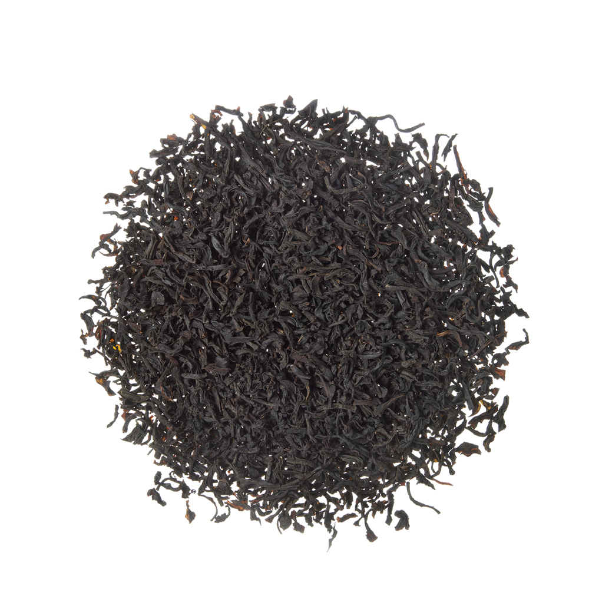
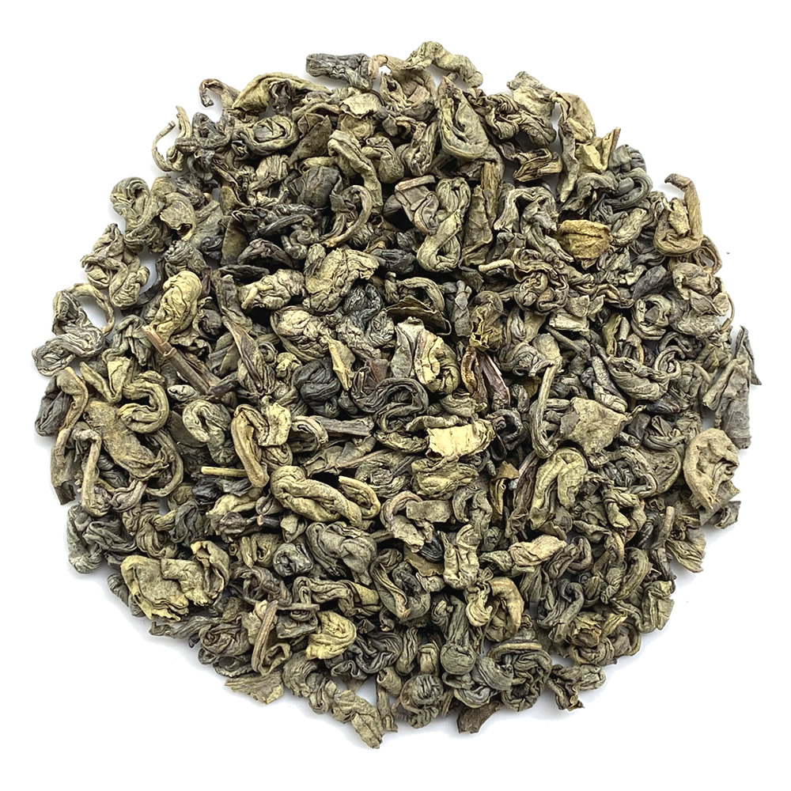
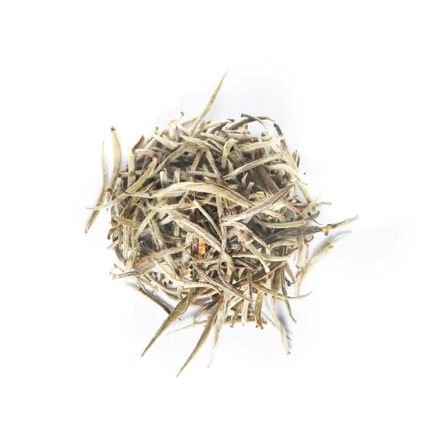

Exploring Tea Plantations in Sri Lanka
Located in the misty hills of Nuwara Eliya, Pedro Tea Estate is
one of the oldest and most renowned tea plantations in Sri Lanka.
The estate's rich history dates back to the late 1800s when its
lush green gardens were first cultivated. Surrounded by
picturesque landscapes, Pedro Tea Estate offers a captivating
experience for tea enthusiasts.
Visitors to Pedro Tea Estate can embark on an immersive journey
through the art of tea production. Take a guided tour through the
sprawling tea gardens, marveling at the meticulously manicured tea
bushes that blanket the hillsides. Witness the skilled plucking of
tender tea leaves by experienced workers, who ensure that only the
finest leaves are chosen.
Nestled in the enchanting hills of Kandy, Kenilworth Tea Estate
showcases the natural beauty and tea heritage of Sri Lanka. This
idyllic plantation is renowned for producing exceptional teas with
a unique character, influenced by the region's fertile soil and
favorable climate. Surrounded by lush greenery and panoramic
views, Kenilworth offers a serene and immersive tea experience.
Explore Kenilworth Tea Estate and witness the journey of tea from
garden to cup. Take a guided tour through the picturesque tea
gardens, where you can observe the skilled tea pluckers carefully
selecting the finest leaves. Gain insights into the estate's
commitment to sustainable farming practices and the preservation
of its pristine environment.
Nestled in the captivating landscapes of Ratnapura, Helboda Tea
Estate is renowned for producing bold and robust low-grown teas.
The region's warm climate and rich soil contribute to the
distinctive flavors and deep infusions of Helboda teas. Surrounded
by rolling hills and scenic beauty, this plantation offers an
immersive tea experience.
Discover the secrets of tea cultivation at Helboda Tea Estate as
you embark on a guided tour through the sprawling tea gardens.
Witness the skilled plucking of mature tea leaves by experienced
workers, who ensure the optimal flavor development of Helboda
teas. Marvel at the lush greenery that blankets the estate,
showcasing the natural
| Name Of Tea | Where It's Found | Image |
|---|---|---|
| Ceylon Black Tea | Nuwara Eliya, Dimbula, and Uva |  |
| Ceylon Green Tea | Nuwara Eliya and Uva |  |
| Ceylon White Tea | Nuwara Eliya and Dimbula |  |